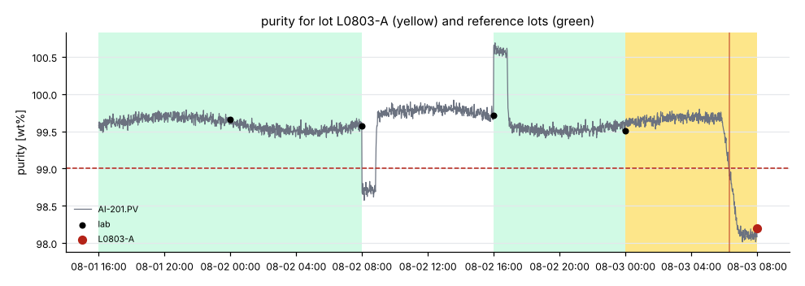
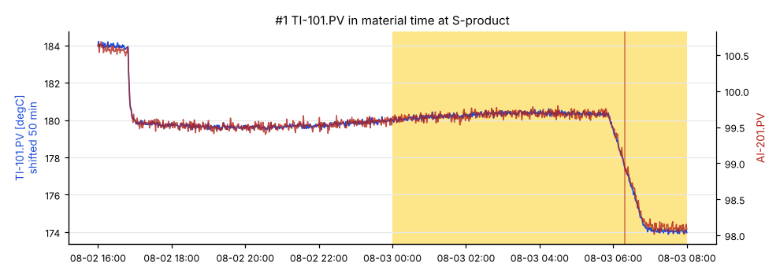
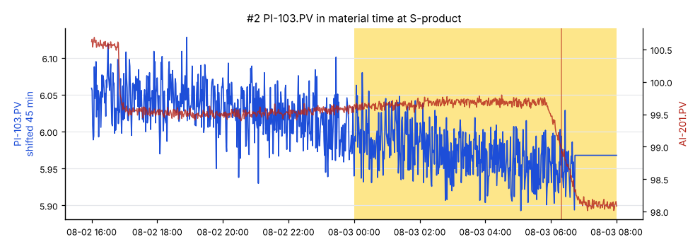
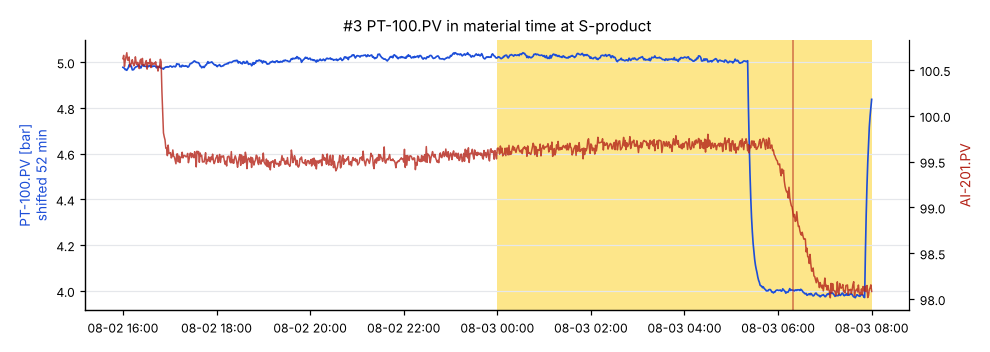

Lot L0803-A: purity low
purity was 98.2 wt% (spec ≥ 99) , sampled at SP-1 on 2026-08-03 07:59. The leading hypothesis: TI-101.PV (E-101) ran 5.73 degC low from 2026-08-03 05:29, 50 min upstream of the sample point; purity moved when it arrived.

Hypotheses
#1 TI-101.PV high
process · score 0.99 · path E-101 → R-101 → S-product · dead time 50 min
TI-101.PV (E-101) ran 5.73 degC low from 2026-08-03 05:29, 50 min upstream of the sample point; purity moved when it arrived.
| Test | Strength | Detail |
|---|---|---|
| effect size | 1.00 | median moved -5.73 (-17.7 reference scales) |
| onset | 1.00 | step lands +0 min from the quality onset (tolerance 10 min) |
| lag correlation | 0.98 | r = +0.98 over 1440 reference points |
Explains away:
TI-104.PV: its shift of -2.86 is 100% predicted from TI-101.PV (regression on the reference lots)

#2 PI-103.PV medium
measurement fault · score 0.45 · path R-101 → S-product · dead time 45 min
PI-103.PV has a flatline finding in the lot window: value frozen at 5.968 for 90 min
Health warnings: H0001

#3 PT-100.PV medium
process · score 0.40 · path S-feed → E-101 → R-101 → S-product · dead time 52 min
PT-100.PV (S-feed) ran 1.03 bar low from 2026-08-03 05:27, 52 min upstream of the sample point; purity moved 55 min after the expected arrival.
| Test | Strength | Detail |
|---|---|---|
| effect size | 1.00 | median moved -1.03 (-46.2 reference scales) |
| onset | 0.00 | step lands -55 min from the quality onset (tolerance 10 min) |
| lag correlation | 0.00 | r = -0.42 over 1440 reference points, sign does not fit the deviation |

E002: FIC-102 absorbed a disturbance: FI-102.PV held, output moved 9.1
Ruled out
| Candidate | Why |
|---|---|
FI-102.PV | held at setpoint by FIC-102 while its output moved 9.1 (+23.6 reference scales) |
TI-104.PV | its shift of -2.86 is 100% predicted from TI-101.PV (regression on the reference lots) |
PI-103.PV | did not move in the lot |
How this was worked out
| Lot window | 2026-08-03 00:00 to 2026-08-03 08:00 at S-product |
|---|---|
| Quality onset | 2026-08-03 06:19 (AI-201.PV) |
| Regime | GRADE = 1 |
| Reference lots | L0802-C (99.5), L0802-A (99.6), L0801-C (99.7) |
| Candidates tested | 5 tags, on a 60 s grid in material time |
| Confidence | Provisional thresholds (high: score >= 0.65 and 0.15 ahead of the next; medium: >= 0.4). They will be set on the public homeostat validation split. |
- 1 earlier in-spec lots skipped: different regime
Data health on the candidate tags
| ID | Tag | Check | Severity | From | Detail |
|---|---|---|---|---|---|
| H0001 | PI-103.PV | flatline | warning | 2026-08-03 05:59 | value frozen at 5.968 for 90 min |